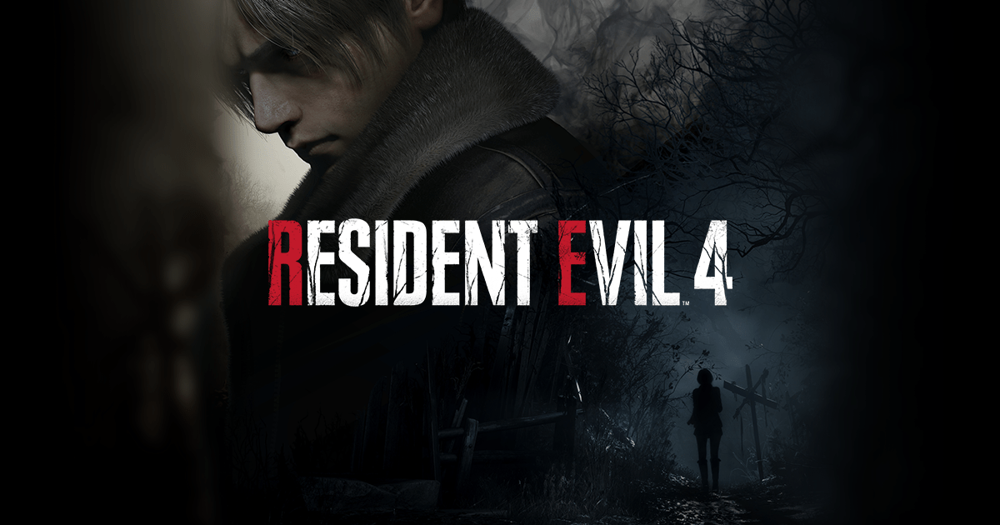

Resident Evil 4
Desarrollado por: Capcom
Publicado por: Capcom
Fecha del trailer: 20/10/2022
Fecha de lanzamiento: 23 de Marzo del 2023
- Género: Survival horror, Acción
- Plataformas: PlayStation 5, PlayStation 5, Xbox Series X|S, PC
- Clasificación: ESBR Mature 17+
Descripción:
Resident Evil 4 es una versión actualizada del juego original de 2005, uno de los títulos más populares y aclamados de la serie. En este juego, los jugadores asumen el papel del agente especial Leon S. Kennedy mientras investiga una misteriosa aldea en Europa que está infectada por un nuevo tipo de virus. Con una jugabilidad mejorada, gráficos mejorados y nuevas características, Resident Evil 4 promete ser una experiencia emocionante y aterradora para los fanáticos de la serie.
Requisitos del sistema:
| Sistema operativo | Procesador | Memoria | Tarjeta gráfica | Almacenamiento |
|---|---|---|---|---|
| Windows 10 (64 bits) | Intel Core i5-4460 o AMD FX-6300 o mejor | 8 GB de RAM | NVIDIA GeForce GTX 760 o AMD Radeon R7 260x con 2 GB de VRAM | 30 GB de espacio disponible |